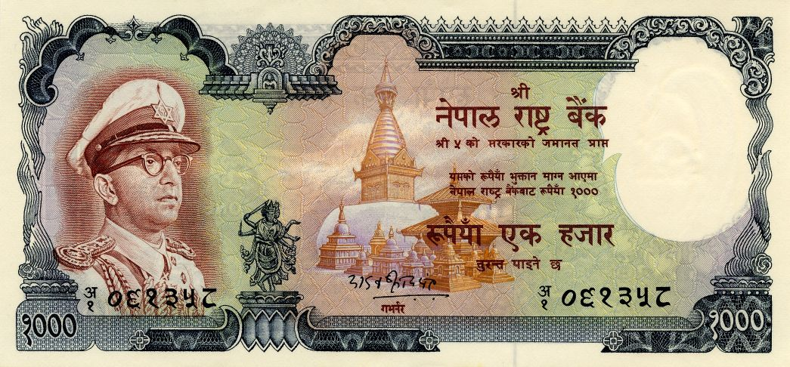

Yadav Prasad Pant (April 24, 1968 to April 28, 1973)
- Domination: Rupees 1000
- Signature: 5-Yadav Prasad Pant
- Printer: De La Rue & Company, Ltd, UK
- Issued date: 28 December, 1969
- Front: King Mahendra wearing military uniform with cap at left, statue of Vishnu at lower left center, Swyambhu Stupa and Harati Temple at center
- Back: Himalayan landscape with Mt. Annapurna in the background
- Watermark: Plumed crown
- Size: 84 x 179 mm